Main Features
TrussTables is an application that performs linear static analysis of 2D/plane truss problems. The main features of the program are as follows:
Model Viewer
The Model Viewer is the central part of the application main window, and displays the truss model. The display of the truss model will change/update as changes are made during the model input. The size of the Model Viewer area can be set via the menu command Model → Model area. Coordinate axes in the left bottom corner of the window can optionally be turned off by the command Model → Show/Hide Axes. The coordinates (in the currently set units) of the current cursor position is shown at the bottom right corner of the main window.
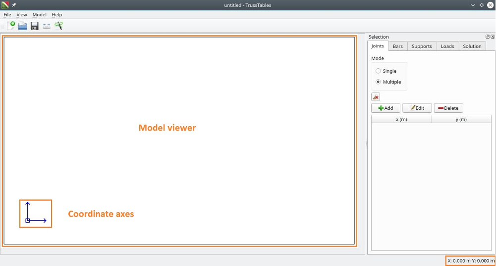Selection Panel
The Selection Panel is a dockable window on the right side of the Model Viewer. The panel consists of five tabs:
The first four tabs facilitate input of the model. The last tab is for model analysis and reporting. All the tabs have at the bottom, a table that gives a tabular representation of the model data corresponding to that tab. For the first four tabs, the tables also provide a means for selecting model parts i.e., joints, bars, suppors and loads for input, editing and deletion.
Joints
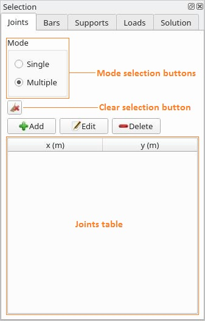The Joints tab has two buttons labeled "Single" and "Multiple" respectively for choosing the selection mode of the Joints table. Single option for single selection and multiple option for multiple/extended selection. Below these is another button that when clicked, clears the current selection in the Joints table. Lastly are three buttons labeled "Add", "Edit" and "Delete". Each button, when clicked, will show a dialog. The Add button will display the Add Joints dialog, the Edit button will show the Edit Joints dialog, and the Delete button will show the Delete Joints dialog.
Bars
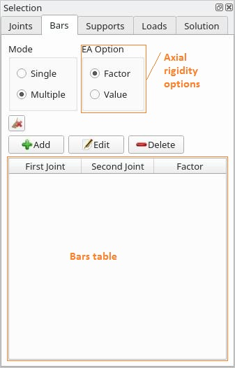The Bars tab also has two buttons for choosing the selection mode of the Bars table. To the right are two buttons for choosing the axial rigidity option. Axial rigidity of the model bars can either be entered as factors/ratios or as actual values of the modulus of elasticity and cross-sectional area of each bar. Below is the Clear Selection button. Three buttons labeled "Add", "Edit" and "Delete" follow. These buttons perform similar functions as indicated above for the Joints tab.
Supports
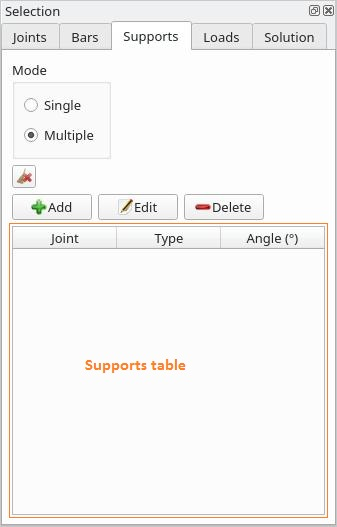The Supports tab has buttons similar in all respects to the Joints tab.
Loads
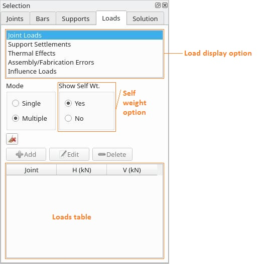The Loads tab has at the top, a list window from which a selection can be made. The current load display option will determine the load type displayed in the Model Viewer and the Loads table. The self-weight option determines whether or not to show joint loads resulting from bar self-weight.This option is only effective when bars are input with the "value" axial rigidity option.. The Add, Edit and Delete buttons perform similar functions as already stated above. The displayed dialog depends on the currently selected load type option.
Solution
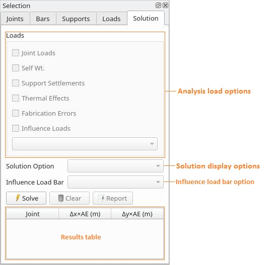The Solution tab is where the model is analyzed and an analysis report generated. The analysis load options required are checked for the analysis. The Solve button will initiate an analysis. The Clear button clears and discards results from any completed model analysis. The Report button generates a complete analysis report. Solution display options allow the display of diffrent aspects of the analysis results in the Model Viewer and Results table. The influence load bar option selects the bar influence line to display, if the analysis includes influence loads.
Main Menu
File Menu
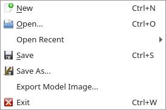Commands:
New
Create a new model file
Open
Open an existing model file
Save
Save model file to disk
Save As
Save model file under a different name
Export Model Image
Export an image file of the model viewer image to disk
Exit
Exit the application
The File menu also contains entries for up to five recently used model files
View Menu
Commands:
Selection Panel
Show the Selection Panel, if it was closed
Notes
Show the Notes window. The Notes window shows notifications regarding the state of the model, and analysis results.
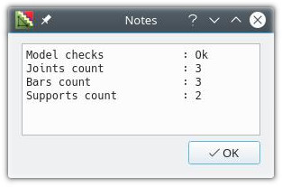Model Menu
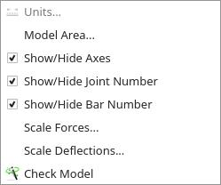Commands:
Units
Show the Units dialog. Here we enter a brief description of the model and select model units
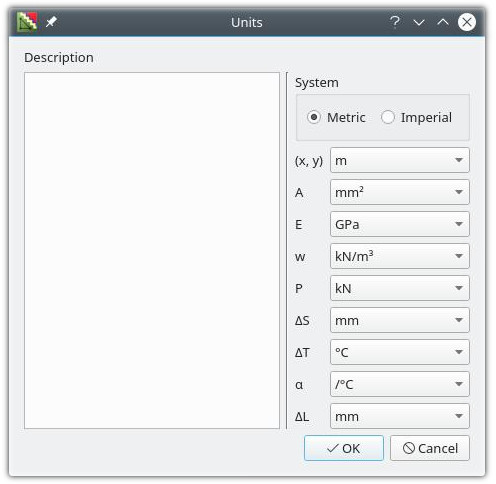Model Area
Display the Model Area dialog. This allows setting the size of the Model Viewer window, and hence the displayed size of the truss model.
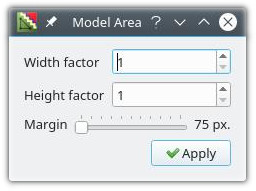The width and height factors determine the width and height respectively of the Model Viewer area, in relation to the size of the visible area of the Model Viewer window. The margin setting determines the distance in screen pixels between the edge of the Model Viewer window and the coordinate axes.
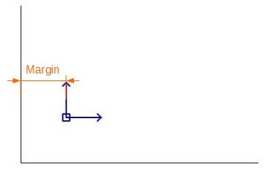Show/Hide Axes
Display or hide the coordinate axes
Show/Hide Joint Number
Display or hide joint number labels
Show/Hide Bar Number
Display or hide bar number labels
Scale Forces
Show the Scale Forces dialog. This sets the scale that determines the length of load vector arrows.
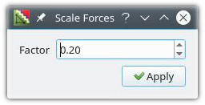Scale Deflections
Show the Scale Deflections dialog. This sets the scale for drawing the deflected shape of the model.This setting is only effective when bars are input with the "value" axial rigidity option..
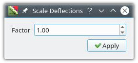Check Model
Check the model for validity for analysis. Result of model check is displayed in the Notes dialog.
Help Menu
Commands:
Help
Show this help documentation
About TrussTables...
Show the About TrussTables dialog
About Qt...
Show the About Qt dialog
Joints
Add Joints
To begin, select the desired model units in the Units dialog, and optionally enter a model description. Click the Add button of the Joints tab to show the Add Joints dialog.
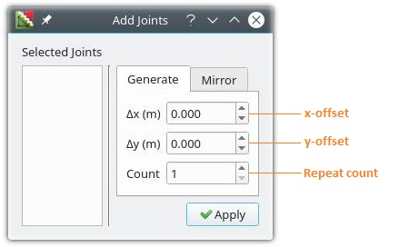The window on the left of the dialog labeled "Selected Joints" will list the current joints selection in the Joints table. Also, the dialog has two tabs labeled "Generate" and "Mirror".
Generate Joints
While in the Generate tab, add the first joint by clicking the Apply button of the dialog. The first joint will always be at the origin of the coordinate axes.
Generate without selection
Enter the following values and click Apply:
This will repeat the last entered joint as many times as is specified by the repeat count, at an interval given by the x and y offset values.
Generate with selection
Select joints as required
Enter the following values and click Apply:
This will repeat the selected joints as many times as is specified by the repeat count, at an interval given by the x and y offset values.
Mirror Joints
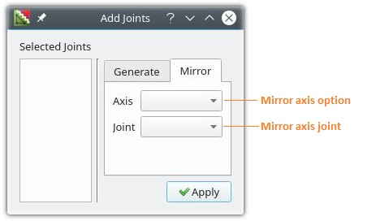In the Mirror tab selected joints are repeated by creating new joints "mirrored" about an axis (horizontal or vertical) through a joint. This option is useful for models that are symmetrical.
Select joints as required
Make choices in the options below and click Apply:
Edit Joints
Click the Edit button of the Joints tab to show the Edit Joints dialog.
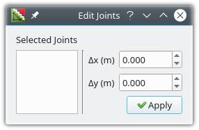The coordinates of the selected joints will be altered by the values of the x and y offsets.
Delete Joints
Click the Delete button of the Joints tab to show the Delete Joints dialog.
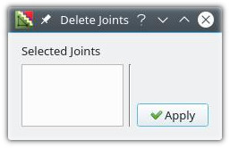The selected joints will be removed from the model.
Rules for Joint Input
| Command | Required Conditions |
|---|---|
| Set model units | No joints input |
| Add Joints |
|
| Edit Joints |
|
| Delete Joints |
|
Bars
Add Bars
Select the desired axial rigidity option. For the "Factor" option, the axial rigidity of the bar is only entered as a factor. For the "Value" option, we enter the bar modulus of elasticity, the area of cross-section, and the material unit-weight.
Click the Add button of the Bars tab to show the Add Bars dialog.
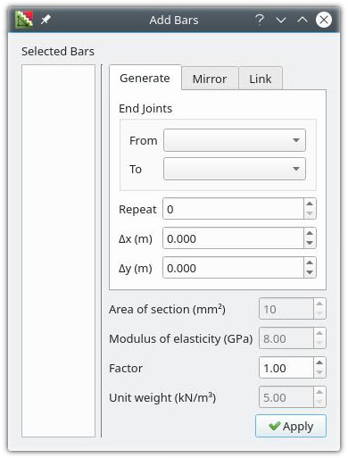The dialog has three tabs labeled "Generate", "Mirror" and "Link".
Generate Bars
Generate without selection
Make selections in the options below, for the bar end joints:
Enter the following values as required, and click Apply:
This will create the bar given by the end joints and entered properties, and repeat this bar as many times as is specified by the repeat count at an interval given by the x and y offset values. New joints will be created and added as required.
Generate with selection
Select bars as required
Enter the following values and click Apply:
This will repeat the selected bars as many times as is specified by the repeat count at an interval given by the x and y offset values.
Mirror Bars
The Mirror tab of the Add Bars dialog is similar in all respects to that of the Add Joints dialog
Link Bars
The Link tab of the Add Bars dialog allows a series of joints to be linked with bars.
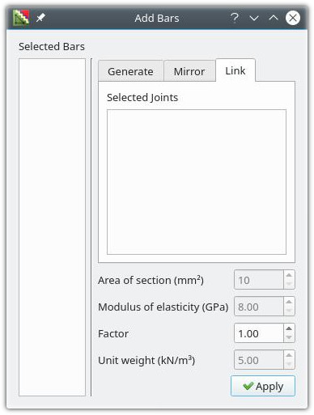Select joints as required
Enter the following values as required, and click Apply:
Edit Bars
Click the Edit button of the Bars tab to show the Edit Bars dialog.
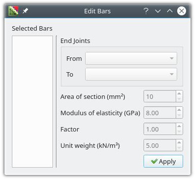Edit with single bar selection
Make selections in the options below, for the bar end joints:
Enter the following values as required, and click Apply:
The selected bar will edited as specified above
Edit with multiple bars selection
Enter the following values as required and click Apply:
The selected bars will be edited as specified above
Delete Bars
Click the Delete button of the Bars tab to show the Delete Bars dialog.
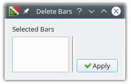The selected bars will be removed from the model.
Rules for Bar Input
| Command | Required Conditions |
|---|---|
| Add Bars |
|
| Edit Bars |
|
| Delete Bars |
|
Supports
Add Supports
Click the Add button of the Supports tab to show the Add Supports dialog.
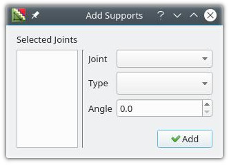Select joints as required
Make choices and enter values as required below and click Apply
Supports will be added to the selected joints
Support types are listed below:
| Icon | Type name | Angle (o) |
|---|---|---|
| fixed support | 0 | |
| fixed support | 90 | |
| fixed support | 180 | |
| fixed support | 270 | |
| inclined roller | varies: 0 - 360 | |
| roller | 0 | |
| roller | 90 | |
| roller | 180 | |
| roller | 270 |
Edit Supports
Click the Edit button of the Supports tab to show the Edit Supports dialog.
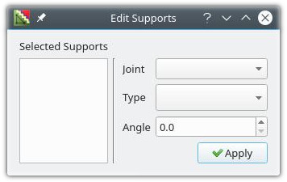Edit with single support selection
Make selections and enter values as required below and click Apply:
The selected support will be edited as specified above
Edit with multiple supports selection
Make selections and enter values as required below and click Apply:
The selected supports will be edited as specified above
Delete Supports
Click the Delete button of the Supports tab to show the Delete Supports dialog.
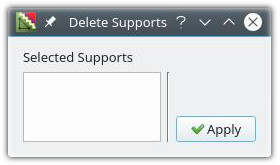The selected supports will be removed from the model
Rules for Support Input
| Command | Required Conditions |
|---|---|
| Add Supports |
|
| Edit Supports |
|
| Delete Supports |
|
Model Checks
Before loads can be applied to the model, it is checked for validity. If any of the following conditions is true, the model becomes invalid.
Any failed condition must be corrected and a check done again to validate the model. Checks can be made by changing to the Loads or Solution tab or by the menu command Model → Check Model
Joint Loads
Add Joint Loads
In the Loads tab, select Joint Loads from the load display options
Click the Add button of the Loads tab to show the Add Joint Loads dialog.
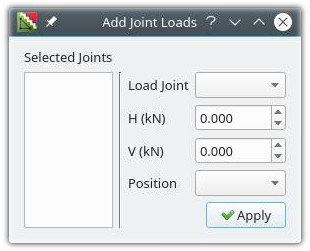Add with no joints selection
Make selections and enter values as required below and click Apply:
The joint load specified will be applied at the given joint
Add with joints selection
Make selections and enter values as required below and click Apply:
The joint load specified will be applied at the selected joints
The joint load positions "head" and "tail" are shown below.
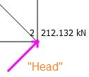 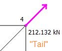Edit Joint Loads
Click the Edit button of the Loads tab to show the Edit Joint Loads dialog.
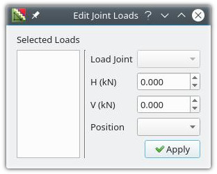Edit with single joint load selection
Make selections and enter values as required below and click Apply:
The selected joint load will be edited as specified above
Edit with multiple joint load selection
Make selections and enter values as required below and click Apply:
The selected joint loads will be edited as specified above
Delete Joint Loads
Click the Delete button of the Loads tab to show the Delete Joint Loads dialog.
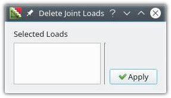The selected joint loads will be removed from the model.
Rules for Joint Load Input
| Command | Required Conditions |
|---|---|
| Add Joint loads |
|
| Edit Joint loads |
|
| Delete Joint loads |
|
Support Settlements
Add Support Settlements
Select Support Settlements from the load display options
Click the Add button of the Loads tab to show the Add Support Settlements dialog.
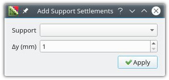Make selections and enter values as required below and click Apply:
The settlement will be applied at the support as specified above
Edit Support Settlements
Click the Edit button of the Loads tab to show the Edit Support Settlements dialog.
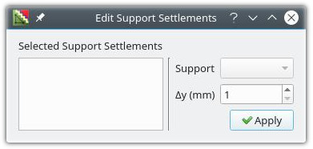Edit with single support settlement selection
Make selections and enter values as required below and click Apply:
The selected support settlement will be edited as specified above
Edit with multiple support settlement selection
Enter value as required below and click Apply:
The selected support settlements will be edited as specified above
Delete Support Settlements
Click the Delete button of the Loads tab to show the Delete Support Settlements dialog.
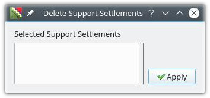The selected support settlements will be removed from the model.
Rules for Support Settlement Input
| Command | Required Conditions |
|---|---|
| Add Support settlements |
|
| Edit Support settlements |
|
| Delete Support settlements |
|
Thermal Effects
Add Thermal Effects
Select Thermal Effects from the load display options
Click the Add button of the Loads tab to show the Add Thermal Effects dialog.
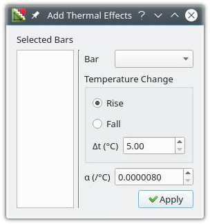Add with no bars selection
Make the entries listed below and click Apply:
The thermal effect specified will be applied to the given bar
Add with bars selection
Make the entries listed below and click Apply:
The thermal effect specified will be applied to the given bars
Edit Thermal Effects
Click the Edit button of the Loads tab to show the Edit Thermal Effects dialog.
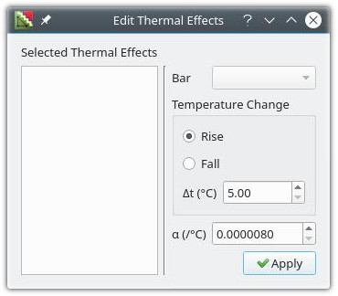Edit with single thermal effect selection
Make the entries listed below and click Apply:
The selected thermal effect will be edited as specified above
Edit with multiple thermal effects selection
Make the entries listed below and click Apply:
The selected thermal effects will be edited as specified above
Delete Thermal Effects
Click the Delete button of the Loads tab to show the Delete Thermal Effects dialog.
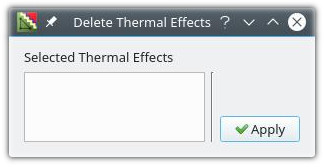The selected thermal effects will be removed from the model.
Rules for Thermal Effect Input
| Command | Required Conditions |
|---|---|
| Add Thermal effects |
|
| Edit Thermal effects |
|
| Delete Thermal effects |
|
Assembly/Fabrication Errors
Add Assembly/Fabrication Errors
Select Assembly/Fabrication Errors from the load display options
Click the Add button of the Loads tab to show the Add Assembly/Fabrication Errors dialog.
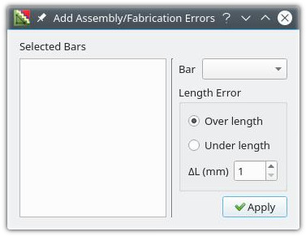Add with no bars selection
Make the entries listed below and click Apply:
The fabrication error specified will be applied to the given bar
Add with bars selection
Make the entries listed below and click Apply:
The fabrication error specified will be applied to the given bars
Edit Assembly/Fabrication Errors
Click the Edit button of the Loads tab to show the Edit Assembly/Fabrication Errors dialog.
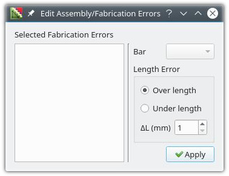Edit with single fabrication error selection
Make the entries listed below and click Apply:
The selected fabrication error will be edited as specified above
Edit with multiple fabrication error selection
Make the entries listed below and click Apply:
The selected fabrication errors will be edited as specified above
Delete Assembly/Fabrication Errors
Click the Delete button of the Loads tab to show the Delete Assembly/Fabrication Errors dialog.
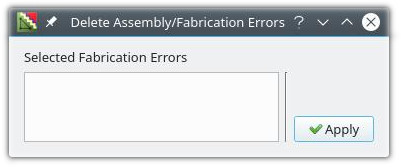The selected fabrication errors will be removed from the model.
Rules for Fabrication Error Input
| Command | Required Conditions |
|---|---|
| Add Fabrication errors |
|
| Edit Fabrication errors |
|
| Delete Fabrication errors |
|
Influence Loads
Add Influence Loads
Select Influence Loads from the load display options
Click the Add button of the Loads tab to show the Add Influence Loads dialog.
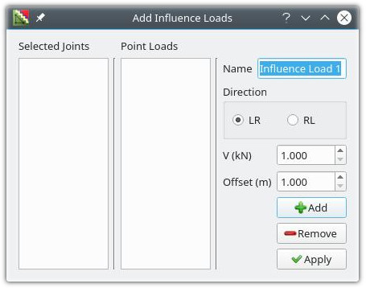Make the entries listed below and click Apply
Edit Influence Loads
Click the Edit button of the Loads tab to show the Edit Influence Loads dialog.
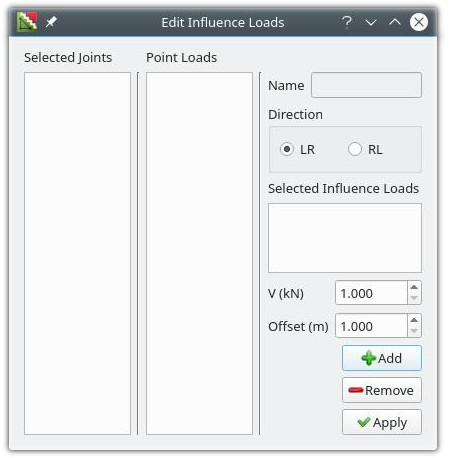Edit with single influence load selection
Make the entries listed below and click Apply:
The selected influence load will be edited as specified above
Edit with multiple influence load selection
Make the entries listed below and click Apply:
The selected influence loads will be edited as specified above
Delete Influence Loads
Click the Delete button of the Loads tab to show the Delete Influence Loads dialog.
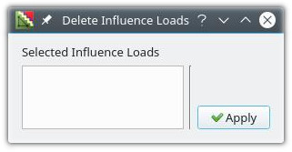The selected influence loads will be removed from the model.
Rules for Influence load Input
| Command | Required Conditions |
|---|---|
| Add Influence loads |
|
| Edit Influence loads |
|
| Delete Influence loads |
|
Load Options
In the solution tab, check the loads to be included in the analysis as required.
Analysis
Click the Solve button to analyze the model
Analysis Report
Click the Report button to generate a report
Click the Clear button to discard the current model solution